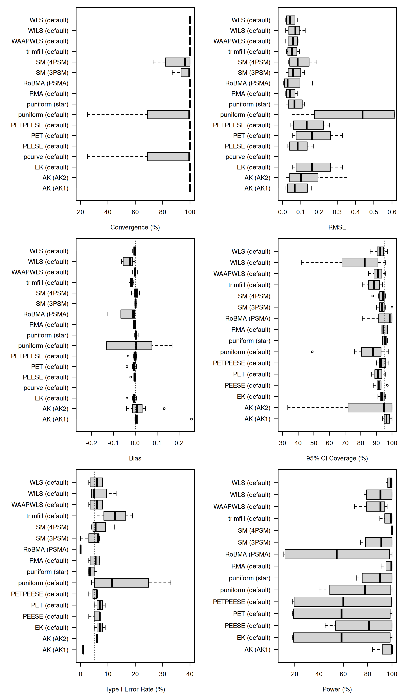

PublicationBiasBenchmark
PublicationBiasBenchmark is an R package for benchmarking publication bias correction methods through simulation studies. It provides:
- Predefined data-generating mechanisms from the literature
- Functions for running meta-analytic methods on simulated data
- Pre-simulated datasets and pre-computed results for reproducible benchmarks
- Tools for visualizing and comparing method performance
All datasets and results are hosted on OSF: https://doi.org/10.17605/OSF.IO/EXF3M
If you use this package in your research, please cite:
Bartoš, F., Pawel, S., Siepe, B. S. (2025). Rethinking Simulation Studies: Living Synthetic Benchmarks for Cumulative Methodological Research. Working paper. https://github.com/FBartos/PublicationBiasBenchmark
A BibTeX entry is given by
@misc{Bartos2025,
year = {2025},
author = {Franti{\v{s}}ek Barto{\v{s}} and Samuel Pawel and Bj{\"o}rn S. Siepe},
title = {Rethinking Simulation Studies: {L}iving Synthetic Benchmarks for Cumulative Methodological Research},
url = {https://github.com/FBartos/PublicationBiasBenchmark},
note = {Working paper}
}Overviews of the benchmark results are available as articles on the package website:
Contributor guidelines for extending the package with data-generating mechanisms and methods are available at:
The rest of this file overviews the main features of the package.
Installation
# Install from GitHub
remotes::install_github("FBartos/PublicationBiasBenchmark")Usage
#> Data, results, and measures will be saved to '/home/sam/Downloads/PublicationBiasBenchmark/resources'.
#> To change the default location, use `PublicationBiasBenchmark.options(simulation_directory = `/path/`)`
#>
#> Attaching package: 'PublicationBiasBenchmark'
#> The following object is masked from 'package:stats':
#>
#> powerSimulating From Existing Data-Generating Mechanisms
# Obtain a data.frame with pre-defined conditions
dgm_conditions("Stanley2017")
# simulate the data from the second condition
df <- simulate_dgm("Stanley2017", 2)
# fit a method
run_method("RMA", df)Using Pre-Simulated Datasets
# download the pre-simulated datasets
# the default settings downloads the datasets to the `resources` directory, use
# PublicationBiasBenchmark.options(simulation_directory = "/path/")
# to change the settings
download_dgm_datasets("no_bias")
# retrieve first repetition of first condition from the downloaded datasets
retrieve_dgm_dataset("no_bias", condition_id = 1, repetition_id = 1)Using Pre-Computed Results
# download the pre-computed results
download_dgm_results("no_bias")
# retrieve results the first repetition of first condition of RMA from the downloaded results
retrieve_dgm_results("no_bias", method = "RMA", condition_id = 1, repetition_id = 1)
# retrieve all results across all conditions and repetitions
retrieve_dgm_results("no_bias")Using Pre-Computed Measures
# download the pre-computed measures
download_dgm_measures("no_bias")
# retrieve measures of bias the first condition of RMA from the downloaded results
retrieve_dgm_measures("no_bias", measure = "bias", method = "RMA", condition_id = 1)
# retrieve all measures across all conditions and measures
retrieve_dgm_measures("no_bias")Visualizing Pre-Computed Results
# retrieve all measures across all conditions and measures
df <- retrieve_dgm_measures("no_bias")
# retrieve conditions
conditions <- dgm_conditions("no_bias")
# add labels
df$label <- with(df, paste0(method, " (", method_setting, ")"))
# distinguish between H0 and H1
df$H0 <- df$condition_id %in% conditions$condition_id[conditions$mean_effect == 0]
par(mfrow = c(3, 2))
par(mar = c(4, 10, 1, 1))
boxplot(convergence*100 ~ label, horizontal = T, las = 1, ylab = "", ylim = c(20, 100), data = df, xlab = "Convergence (%)")
boxplot(rmse ~ label, horizontal = T, las = 1, ylab = "", ylim = c(0, 0.6), data = df, xlab = "RMSE")
boxplot(bias ~ label, horizontal = T, las = 1, ylab = "", ylim = c(-0.25, 0.25), data = df, xlab = "Bias")
abline(v = 0, lty = 3)
boxplot(coverage*100 ~ label, horizontal = T, las = 1, ylab = "", ylim = c(30, 100), data = df, xlab = "95% CI Coverage (%)")
abline(v = 95, lty = 3)
boxplot(power*100 ~ label, horizontal = T, las = 1, ylab = "", ylim = c(0, 40), data = df[df$H0,], xlab = "Type I Error Rate (%)")
abline(v = 5, lty = 3)
boxplot(power*100 ~ label, horizontal = T, las = 1, ylab = "", ylim = c(10, 100), data = df[!df$H0,], xlab = "Power (%)")
Simulating From an Existing DGM With Custom Settings
# define sim setting
sim_settings <- list(
n_studies = 100,
mean_effect = 0.3,
heterogeneity = 0.1
)
# check whether it is feasible
# (defined outside of the function - not to decrease performance during simulation)
validate_dgm_setting("no_bias", sim_settings)
# simulate the data
df <- simulate_dgm("no_bias", sim_settings)
# fit a method
run_method("RMA", df)Key Functions
Data-Generating Mechanisms
-
simulate_dgm(): Generates simulated data according to specified data-generating mechanism and settings. -
dgm_conditions(): Lists prespecified conditions of the data-generating mechanism. -
validate_dgm_setting(): Validates (custom) setting of the data-generating mechanism. -
download_dgm_datasets(): Downloads pre-simulated datasets from the OSF repository. -
retrieve_dgm_dataset(): Retrieves the pre-simulated dataset of a given condition and repetition from downloaded from the pre-downloaded OSF repository.
Method Estimation And Results
-
run_method(): Estimates method on a supplied data according to the specified settings. -
method_settings(): Lists prespecified settings of the method. -
download_dgm_results(): Downloads pre-computed results from the OSF repository. -
retrieve_dgm_results(): Retrieves the pre-computed results of a given method, condition, and repetition from the pre-downloaded OSF repository.
Performance measures And Results
-
bias(),bias_mcse(), etc.: Functions to compute performance measures and their Monte Carlo standard errors. -
download_dgm_measures(): Downloads pre-computed performance measures from the OSF repository. -
retrieve_dgm_measures(): Retrieves the pre-computed performance measures of a given method, condition, and repetition from the pre-downloaded OSF repository.
Available Data-Generating Mechanisms
See methods("dgm") for the full list:
-
"no_bias": Generates data without publication bias (a test simulation) -
"Stanley2017": Tom D. Stanley et al. (2017) -
"Alinaghi2018": Alinaghi & Reed (2018) -
"Bom2019": Bom & Rachinger (2019) -
"Carter2019": Carter et al. (2019)
Available Methods
See methods("method") for the full list:
-
"mean": Mean effects size -
"FMA": Fixed effects meta-analysis -
"RMA": Random effects meta-analysis -
"WLS": Weighted Least Squares -
"trimfill": Trim-and-Fill (Duval & Tweedie, 2000) -
"WAAPWLS": Weighted Least Squares - Weighted Average of Adequately Power Studies (Tom D. Stanley et al., 2017) -
"WILS": Weighted and Iterated Least Squares (T. D. Stanley & Doucouliagos, 2024) -
"PET": Precision-Effect Test (PET) publication bias adjustment (Tom D. Stanley & Doucouliagos, 2014) -
"PEESE": Precision-Effect Estimate with Standard Errors (PEESE) publication bias adjustment (Tom D. Stanley & Doucouliagos, 2014) -
"PETPEESE": Precision-Effect Test and Precision-Effect Estimate with Standard Errors (PET-PEESE) publication bias adjustment (Tom D. Stanley & Doucouliagos, 2014) -
"EK": Endogenous Kink (Bom & Rachinger, 2019) -
"SM": Selection Models (3PSM, 4PSM) (Vevea & Hedges, 1995) -
"pcurve": P-curve (Simonsohn et al., 2014) -
"puniform": P-uniform and P-uniform* Aert & Assen (2025) -
"AK": Andrews & Kasy selection models (AK1, AK2) (Andrews & Kasy, -
"RoBMA": Robust Bayesian Meta-Analysis (Bartoš et al., 2023)
Available Performance Measures
See ?measures for the full list of performance measures and their Monte Carlo standard errors/
DGM OSF Repositories
All DGMs are linked to the OSF repository (https://osf.io/exf3m/) and contain the following elements:
-
data: folder containing by-condition simulated datasets for all repetitions -
results: folder containing by-method results for all conditions * repetitions -
measures: folder containing by-measure performance for all methods * conditions -
metadata: folder containing the following information:-
dgm-conditions.csv: file mapping of all conditions and the corresponding settings -
dgm-generation.R: file with code for exact reproduction of the pre-simulated datasets -
dgm-sessionInfo.txt: file with reproducibility details for the pre-simulated datasets -
dgm-session.log: file with reproducibility details for the pre-simulated datasets (based on sessioninfo package) -
results.R: file with code for exact reproduction of the by method results (might be method / method groups specific) -
results-sessionInfo.txt: file with reproducibility details for the precomputed results (might be method / method groups specific) -
pm-computation.R: file with code for computation of performance measures
-